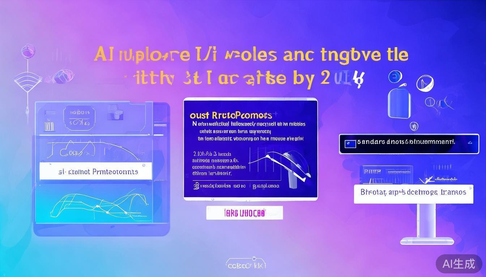

AI 写小说、短剧带来的影响（2026 最新数据）
这一章讲「内容生产端」被 AI 改变后，行业和创作者发生了什么。
一、产能的指数级膨胀
- 2026 年上半年，上线 AI 剧 / 漫剧约 22.19 万部。
- 阅文短剧 + AI 漫剧合计收入超 4.3 亿元；同期制作成本从 1.95 亿元升到 4.33 亿元，增长 122.2%。
一句话：AI 让「拍一部」的成本低到可以「批量生产」。
二、爆款率反而暴跌

产能暴涨的同时，破亿作品不足 150 部，爆款率跌到 0.12%。海量内容把注意力冲淡了——「做出来」不再值钱，「被看到」才值钱。
三、行业格局：AI 负责规模，真人深耕情感
行业进入「真人剧 + AI 剧并行」的深水区：
- AI 内容靠低成本批量产出，抢的是规模和流量。
- 真人内容被压缩收益空间，反而要往情感、演技、独特视角上走。
- 红果短剧、番茄小说等平台成为网文改编的新出口，进一步放大头部 IP 的存量优势。
四、对创作者的影响
- 手艺贬值、判断升值：会写一段话不再稀缺，稀缺的是「知道该写什么、怎么改、往哪发」。
- 短剧 / 漫剧成了网文的新形态：会写故事的人，多了一条变现路径。
- 同质化是最大的坑：AI 能批量产，也能批量雷同，差异化是活下来的关键。
结论
AI 小说/短剧不是「消灭创作」，而是把创作的产能上限和竞争烈度同时拉高。赢家是「会用 AI 放大自己独特想法」的人。
本文由本站 AI 创作整理，内容基于公开知识/官方资料提炼，信息请以官方发布为准； 涉及的历史事件、产品与数据均可在公开渠道查证，本站不编造来源。引用外部内容遵循其原始许可，标注出处即可。
2026-09-03 · 今日 AI 进展
2026-09-03 · 今日 AI 进展
当日国内网文与短剧行业最值得记录的动态，是阅文集团正式上线面向签约作者的“剧情一致性辅助工具”公测版本，该功能接入其自研的阅文妙笔大模型3.5版本，核心解决AI生成内容长期存在的“人设漂移”“剧情前后矛盾”问题。据官方公开说明，工具可对单部百万字级作品的人物设定、时间线、伏笔线索做全量结构化解析，作者在撰写新章节时，系统会实时提示人设冲突、道具遗漏、时间线错位等问题，同时支持一键回溯对应前文段落，公测阶段首批开放给1.2万名头部签约作者使用，覆盖男频、女频全品类网文创作。这一进展直接回应了此前行业对AI写文“逻辑松散、长文本失控”的普遍批评，也标志着网文平台的AI工具从“代写生成”正式转向“创作辅助校准”的落地阶段。
同日，快手磁力引擎发布短剧行业AI制作效能报告，披露截至2026年8月，平台上线的AI辅助制作微短剧占比已达47%，其中AI生成分镜、AI数字人出演、AI配音配乐三个环节的渗透率最高，单部短剧的平均制作周期从2025年同期的21天压缩至9天，制作成本平均下降58%。值得注意的是，报告特别指出，使用AI辅助完成的短剧，其完播率与纯人工制作短剧的差距已缩小至3%以内，但用户评分最高的作品依然保留了70%以上的人工原创剧情占比，完全由AI生成剧情的短剧普遍存在“情绪点密度不足、反转套路化”的问题，用户弃播率比人工编剧作品高出22%。这组数据为AI在短剧领域的应用边界提供了可核验的行业参照，说明AI目前更适合承担制作端的效率工作，核心叙事创作仍无法完全替代人工。
两项当日落地的行业进展，共同指向AI小说与短剧发展的明确趋势：
- AI工具的定位正从“替代创作者”转向“服务创作者”，长文本一致性校验、制作环节降本增效是当前落地最成熟的场景，而非全流程无人化生成。
- 内容行业对AI的评价标准正在回归内容本身，技术效能的提升最终需要服务于叙事质量，单纯追求生成速度、压缩成本的AI内容已开始出现用户审美疲劳的明确信号。
- 网文与短剧的AI产业链分工正在快速成型，大模型厂商、内容平台、创作者三方的权责边界逐渐清晰，围绕AI生成内容的版权归属、收益分配规则也在同步落地完善。